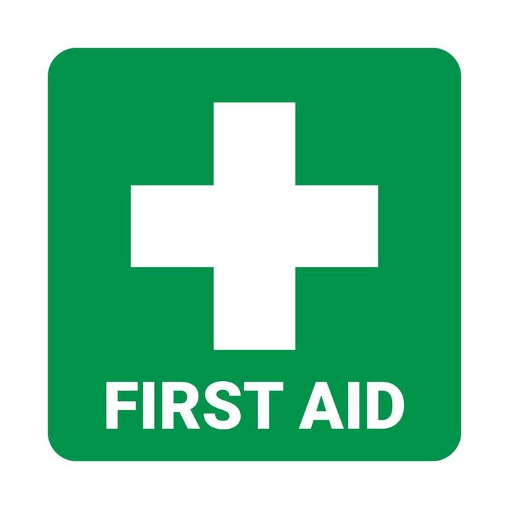

HEALTH EDUCATION
LEARN - PROTECT - THRIVE
Simple, trusted health information for you and your community.
MENTAL HEALTH

Your Mental Health Matters
Mental health is an important part of your overall wellbeing. It affects how you think, feel, cope with challenges and connect with others.
Everyone experiences difficult moments. Seeking help, talking to someone you trust and practising self-care can help you take steps towards better wellbeing.
How Can You Care for Your Mental Health?
- Make time for rest and relaxation.
- Talk about your feelings with someone you trust.
- Stay connected with supportive people.
- Maintain healthy sleep and physical activity habits.
- Seek professional help when you need it.
Remember
You are not alone. Your mental health matters, and support is available.
Learn about mental health, emotional well-being, stress, anxiety and depression.
Explore Mental Health ResourcesMEDICATION EDUCATION

Your Mental Health Matters
Mental health is an important part of your overall wellbeing. It affects how you think, feel, cope with challenges and connect with others.
Everyone experiences difficult moments. Seeking help, talking to someone you trust and practising self-care can help you take steps towards better wellbeing.
How Can You Care for Your Mental Health?
- Make time for rest and relaxation.
- Talk about your feelings with someone you trust.
- Stay connected with supportive people.
- Maintain healthy sleep and physical activity habits.
- Seek professional help when you need it.
Remember
You are not alone. Your mental health matters, and support is available.
For reliable information about medicines and health products, visit SAHPRA .
FIRST AID

First aid is the immediate assistance given to someone who is injured or suddenly becomes ill before professional medical help arrives. Knowing basic first aid can save lives, prevent injuries from becoming worse, and provide comfort during emergencies.
Why is First Aid Important?
- Saves lives: Quick action can help someone survive a medical emergency.
- Prevents further harm: Proper first aid can reduce the risk of an injury becoming more serious.
- Provides reassurance: Staying calm and comforting an injured person can help reduce panic.
- Promotes safety: Learning first aid prepares people to respond to accidents at home, school, work, or in public.
Basic First Aid Tips
- Check that the scene is safe before approaching.
- Check whether the person responds and is breathing normally.
- Call emergency services when necessary.
- For severe bleeding, apply firm, direct pressure with a clean dressing.
- If someone is unresponsive and not breathing normally, call for emergency help and begin CPR if you can, following the emergency operator's instructions.
- Do not move someone with a suspected serious neck or spinal injury unless there is immediate danger.
Remember: First aid does not replace professional medical treatment. When an emergency occurs, seek appropriate medical assistance.
Learn More About First Aid
Visit the South African Red Cross Society for first aid training and educational resources.
Explore First Aid ResourcesHYGIENE & DISEASE PREVENTION

Hygiene and disease prevention involve practising healthy habits to maintain cleanliness, prevent infections, and protect ourselves and others from illness. Good hygiene helps reduce the spread of harmful germs in our homes, schools, workplaces, and communities.
Why Are Hygiene and Disease Prevention Important?
- Prevents infections: Proper hygiene reduces exposure to germs that cause illnesses such as diarrhoeal diseases and respiratory infections.
- Protects the community: Healthy habits help reduce the spread of infectious diseases between people.
- Promotes food safety: Clean hands, safe drinking water, and proper food handling help prevent foodborne illnesses.
- Improves overall health: Good hygiene supports personal well-being and contributes to a healthier environment.
Essential Hygiene Practices
- Handwashing: Wash your hands with soap and clean water before handling food, before eating, after using the toilet, and after coughing, sneezing, or touching waste.
- Personal cleanliness: Bathe regularly, wear clean clothes, and maintain good oral hygiene by brushing your teeth twice daily.
- Safe drinking water: Use water from a safe source. If the water may be contaminated, follow local health guidance on making it safe to drink.
- Food hygiene: Wash produce with safe water, cook food thoroughly, separate raw and cooked foods, and store food safely.
- Respiratory hygiene: Cover your mouth and nose when coughing or sneezing, dispose of tissues properly, and clean your hands.
- Environmental cleanliness: Dispose of waste correctly, clean frequently touched surfaces, and keep surroundings free from rubbish and standing water where mosquitoes can breed.
- Vaccination: Keep vaccinations up to date according to recommended schedules to help protect against preventable diseases.
How Can We Prevent the Spread of Diseases?
Disease prevention requires individual and community effort. Practise good hygiene, avoid sharing personal items such as toothbrushes, follow recommended vaccination schedules, and seek medical advice when symptoms are severe, persistent, or concerning.
Antibiotics should only be used when prescribed by an appropriate healthcare professional. They do not treat viral infections such as the common cold or flu.
When Should You Seek Medical Help?
Seek medical advice if you experience persistent fever, ongoing diarrhoea, signs of dehydration, or symptoms that are getting worse. Seek emergency assistance for severe difficulty breathing, confusion, or unconsciousness.
Remember: Prevention starts with small, consistent actions. Clean hands, safe food and water, vaccination, and responsible hygiene habits can help protect you, your family, and your community.
Learn More About Disease Prevention
Visit the World Health Organization for reliable information about hygiene, sanitation, infectious diseases, and disease prevention.
Explore WHO Hygiene and Health ResourcesNUTRITION & HEALTHY LIVING
Nutrition and healthy living involve making healthy food choices, staying physically active, getting enough sleep, and caring for your physical and mental well-being. A balanced diet provides the nutrients your body needs for energy, growth, repair, and protection against illness.
Why Is Nutrition Important?
- Provides energy: Healthy foods provide energy for daily activities, studying, working, and exercising.
- Supports growth and development: Essential nutrients help the body grow, repair tissues, and function properly.
- Supports the immune system: A varied, balanced diet helps the body maintain its natural defences.
- Promotes long-term health: Healthy eating habits can help reduce the risk of certain chronic diseases.
Tips for Healthy Eating
- Eat a balanced diet: Include vegetables, fruits, whole grains, protein-rich foods, and appropriate amounts of healthy fats.
- Eat a variety of foods: Different foods provide different vitamins, minerals, and other essential nutrients.
- Drink enough water: Choose safe drinking water regularly throughout the day. Your needs may vary depending on your activity and health.
- Limit excess sugar, salt, and unhealthy fats: Reduce frequent consumption of sugary drinks and foods high in salt or saturated and trans fats.
- Practise food safety: Wash produce with safe water, cook food thoroughly, and store food at safe temperatures.
- Eat regularly according to your needs: Choose meals and snacks that help you maintain energy and meet your nutritional requirements.
Healthy Living Habits
- Stay physically active: Choose activities you enjoy, such as walking, dancing, cycling, or playing a sport.
- Get enough sleep: Maintain a regular sleep routine to support concentration, recovery, and overall health.
- Look after your mental health: Make time for relaxation, connect with supportive people, and seek help when you need it.
- Avoid smoking and harmful substance use: Make choices that protect your long-term health.
- Attend health check-ups: Follow recommended screening and vaccination guidance and consult healthcare professionals when needed.
Healthy Eating on a Budget
Eating healthily does not have to be expensive. Plan meals ahead, compare prices, buy seasonal produce, and consider affordable foods such as beans, lentils, eggs, oats, and vegetables. Frozen vegetables can also be nutritious options.
Building Healthy Habits
Healthy living is about consistency, not perfection. Start with small, realistic changes, such as adding a vegetable to a meal, taking a daily walk, drinking water regularly, or establishing a bedtime routine.
Remember: Every person's nutritional needs are different. If you have a medical condition or specific dietary requirements, consult a registered dietitian or healthcare professional for personalised advice.
Learn More About Nutrition and Healthy Living
Explore the World Health Organization's guidance on healthy diets to learn more about balanced nutrition and healthy lifestyle choices.
Explore WHO Healthy Diet ResourcesELEDERLY HEALTH AND AGEING

Ageing is a natural part of life that brings physical, emotional, and social changes. Elderly health focuses on helping older adults maintain their independence, dignity, safety, and quality of life. With appropriate healthcare, social support, and healthy lifestyle habits, older adults can continue to live meaningful and fulfilling lives.
Why Is Elderly Health Important?
- Promotes independence: Appropriate care and support help older adults perform daily activities and maintain their independence.
- Supports physical health: Regular check-ups and healthy habits help identify health concerns early and manage existing conditions.
- Protects mental well-being: Emotional support, social interaction, and access to mental healthcare can improve quality of life.
- Prevents injuries: Reducing fall risks and making homes safer can help older adults move around with greater confidence.
- Promotes dignity and respect: Every older person deserves compassionate care, respect, and the opportunity to make decisions about their own life.
Healthy Ageing Tips
- Eat nutritious meals: Include a variety of vegetables, fruits, whole grains, and protein-rich foods to support strength and health.
- Stay physically active: Engage in suitable activities such as walking, stretching, or balance exercises according to your abilities and healthcare advice.
- Attend regular health check-ups: Monitor blood pressure, vision, hearing, and other health concerns as recommended by a healthcare professional.
- Use medicines safely: Follow prescribed instructions, keep a list of medicines, and consult a healthcare professional before changing or stopping medication.
- Stay socially connected: Spend time with family, friends, community groups, or activities that help reduce loneliness and isolation.
- Protect mental health: Make time for enjoyable activities, share concerns with trusted people, and seek professional help when experiencing persistent sadness or anxiety.
- Get adequate sleep: Maintain a regular sleep routine and speak to a healthcare professional if sleep problems persist.
Preventing Falls and Injuries
Falls can cause serious injuries, but some risks can be reduced by keeping walkways clear, improving lighting, installing handrails where needed, using suitable footwear, and having vision and medication concerns reviewed. Mobility aids should be properly fitted and used as advised.
Common Health Concerns in Older Adults
- High blood pressure and heart disease.
- Diabetes and other long-term health conditions.
- Arthritis and reduced mobility.
- Changes in vision and hearing.
- Memory difficulties and dementia.
- Loneliness, anxiety, and depression.
- Malnutrition and dehydration.
Experiencing a health concern is not an inevitable part of ageing. New, persistent, or worsening symptoms should be discussed with a healthcare professional.
Supporting Older Adults
Families, caregivers, and communities can support older adults by listening to their needs, helping them access healthcare, respecting their choices, maintaining social connections, and protecting them from neglect, abuse, and exploitation.
Remember: Ageing should be accompanied by dignity, respect, and appropriate support. Small acts of care can make a meaningful difference in an older person's life.
Learn More About Healthy Ageing
Visit the World Health Organization for information about healthy ageing, age-friendly communities, and the health needs of older people.
Explore WHO Healthy Ageing ResourcesMATERNAL & CHILD HEALTH
.jpeg)
Mental and child health focuses on supporting children's physical, emotional, social, and psychological development. A healthy childhood provides the foundation for learning, building relationships, and enjoying a better quality of life. Children need proper nutrition, healthcare, protection, emotional support, and a safe environment to grow and thrive.
Why Are Mental and Child Health Important?
- Supports healthy development: Regular healthcare, nutritious food, and a safe environment help children grow and develop.
- Promotes emotional well-being: Children need love, understanding, and support to express their feelings and develop healthy relationships.
- Encourages early intervention: Identifying developmental, emotional, or behavioural concerns early can help children receive appropriate support.
- Prevents illness: Immunisation, good hygiene, and regular health visits help protect children from preventable diseases.
- Protects children: Every child deserves safety, dignity, care, and protection from abuse, neglect, and violence.
Promoting Children's Mental Health
- Encourage open communication: Create a safe space where children can talk about their feelings without fear of judgement.
- Provide love and emotional support: Listen to children, reassure them, and acknowledge their emotions.
- Encourage play and social interaction: Play, hobbies, and positive friendships support emotional and social development.
- Maintain healthy routines: Encourage sufficient sleep, physical activity, balanced meals, and time to relax.
- Recognise warning signs: Persistent sadness, withdrawal, intense fears, major behavioural changes, or difficulties at school may indicate that a child needs additional support.
- Seek professional help: Consult a healthcare professional, counsellor, psychologist, or other qualified provider when emotional or behavioural concerns persist.
Essential Child Health Practices
- Balanced nutrition: Provide age-appropriate, nutritious meals that support growth and development.
- Immunisation: Follow South Africa's recommended childhood immunisation schedule and attend clinic appointments.
- Personal hygiene: Teach children to wash their hands with soap, brush their teeth, and practise good hygiene.
- Growth and development monitoring: Attend child health visits to monitor growth, development, hearing, vision, and other health needs.
- Safe environments: Keep medicines, cleaning products, sharp objects, and other dangerous items out of children's reach. Use appropriate car seats and supervise young children around water.
- Protection from abuse: Teach children about personal boundaries and encourage them to speak to a trusted adult if someone makes them feel unsafe.
When Should Parents or Caregivers Seek Help?
Seek medical advice if a child has persistent symptoms, feeding difficulties, concerns about growth or development, or significant changes in mood or behaviour.
Seek urgent medical assistance if a child has severe difficulty breathing, becomes unresponsive, experiences a seizure for the first time, or develops other serious symptoms. Follow emergency medical guidance.
Supporting Parents and Caregivers
Caring for a child can be rewarding, but it can also be challenging. Parents and caregivers should seek support when they feel overwhelmed. Families, schools, clinics, and communities can work together to promote children's physical health, emotional well-being, and safety.
Remember: Every child deserves to feel safe, loved, heard, and supported. Caring for a child's mental health is just as important as caring for their physical health.
Learn More About Mental and Child Health
Visit the World Health Organization for reliable information about child health, development, and mental well-being.
Explore WHO Child Health ResourcesVisit SADAG for Mental Health Support
CHRONIC DISEASE CARE
.jpeg)
Chronic diseases are long-term health conditions that often require ongoing medical care, monitoring, and lifestyle management. Examples include diabetes, high blood pressure, heart disease, asthma, and chronic respiratory diseases. With appropriate treatment and healthy lifestyle choices, many people can manage these conditions and improve their quality of life.
Why Is Chronic Disease Care Important?
- Prevents complications: Regular monitoring and appropriate treatment can reduce the risk of serious health complications.
- Improves quality of life: Managing symptoms can help people continue with their daily activities.
- Supports early detection: Health screenings can identify certain conditions before serious complications develop.
- Encourages healthy living: Balanced nutrition, physical activity, and other healthy habits can support long-term health.
Common Chronic Diseases
- Diabetes: A condition that affects how the body regulates blood glucose. Management may include healthy eating, monitoring glucose levels, and prescribed medication.
- High Blood Pressure: Also called hypertension, this condition can increase the risk of heart disease, stroke, and kidney problems. Regular blood pressure checks are important.
- Heart Disease: Conditions affecting the heart that may require medication, lifestyle changes, and ongoing medical care.
- Asthma: A long-term respiratory condition that can cause wheezing, coughing, chest tightness, and difficulty breathing. Following an individual treatment plan can help control symptoms.
- Chronic Respiratory Diseases: Long-term lung conditions that may affect breathing and require medical assessment and management.
Tips for Managing Chronic Diseases
- Attend regular check-ups: Visit your clinic or healthcare professional for monitoring, screening, and treatment reviews.
- Take medication as prescribed: Follow your treatment instructions and consult a healthcare professional before changing or stopping any prescribed medicine.
- Eat a balanced diet: Include a variety of vegetables, fruits, whole grains, and suitable protein sources. Follow personalised dietary advice if needed.
- Stay physically active: Choose safe activities appropriate for your abilities and medical condition.
- Avoid smoking: Avoid tobacco and seek support if you need help stopping smoking.
- Monitor your condition: If advised by your healthcare professional, keep records of measurements such as blood pressure or blood glucose.
- Look after your mental health: Managing a long-term condition can be stressful. Reach out to trusted people or a healthcare professional for emotional support.
Understanding Medication Safety
Always use medicines according to the instructions provided by your healthcare professional. Keep track of your medicines, tell your healthcare team about other medicines or supplements you use, and ask questions if you experience side effects or have concerns. Do not share prescription medicines with other people.
When Should You Seek Medical Help?
Contact a healthcare professional if your symptoms worsen, your medication causes concerning side effects, or you are struggling to manage your condition.
Seek emergency assistance for severe chest pain, sudden weakness on one side of the body, difficulty speaking, or severe difficulty breathing.
Prevention and Early Detection
Not all chronic diseases can be prevented, but healthy lifestyle choices, recommended health screenings, avoiding tobacco, and managing risk factors can help reduce the risk of some conditions and their complications.
Remember: Chronic disease management is an ongoing journey. Following a treatment plan, attending check-ups, and asking for support can help you take control of your health.
Learn More About Chronic Disease Care
Visit the World Health Organization for reliable information about noncommunicable diseases, prevention, and long-term health management.
Explore WHO Chronic Disease ResourcesHIV & SEXUAL HEALTH
HIV (Human Immunodeficiency Virus) affects the immune system and can make it harder for the body to fight infections if left untreated. Sexual health involves physical, emotional, and social well-being in relation to sexuality. Access to accurate information, testing, prevention, and treatment helps people make informed decisions and protect their health.
Understanding HIV
HIV can be transmitted through certain body fluids, including blood, semen, vaginal fluids, rectal fluids, and breast milk. It is commonly transmitted through condomless sex when effective prevention measures are not used, sharing needles or injecting equipment, and from a parent to a child during pregnancy, childbirth, or breastfeeding.
HIV is NOT transmitted through hugging, handshakes, sharing food, using the same toilet, or ordinary everyday contact.
HIV Prevention
- Use condoms: Correct and consistent use of condoms reduces the risk of HIV and many other sexually transmitted infections (STIs).
- Consider PrEP: Pre-exposure prophylaxis (PrEP) is medication taken by HIV-negative people to help prevent HIV. Consult a healthcare professional to determine whether it is suitable for you.
- Know about PEP: Post-exposure prophylaxis (PEP) may prevent HIV after a possible exposure. It must be started as soon as possible, ideally within 24 hours and no later than 72 hours.
- Do not share needles: Use sterile injecting equipment and never share needles or other equipment that may contain blood.
- Get tested: HIV testing helps you understand your status and access appropriate prevention or treatment.
HIV Testing and Treatment
Knowing your HIV status is an important step towards protecting your health. HIV tests are available at many clinics and healthcare facilities. A healthcare professional can explain the testing window period and advise whether repeat testing is needed.
Although there is currently no widely available cure for HIV, antiretroviral therapy (ART) can control the virus and help people live long, healthy lives. Taking treatment as prescribed is essential.
People living with HIV who maintain an undetectable viral load through effective treatment do not transmit HIV sexually. This is known as Undetectable = Untransmittable (U=U).
Sexual Health and STI Prevention
- Practise safer sex: Use condoms and discuss sexual health with your partner in a respectful and supportive way.
- Get screened for STIs: Some sexually transmitted infections have no noticeable symptoms. Testing can help identify infections early.
- Consider vaccination: Ask a healthcare professional about vaccines that help protect against infections such as hepatitis B and human papillomavirus (HPV).
- Respect consent: Sexual activity must be voluntary. Everyone has the right to set boundaries and say no.
- Seek medical care: Speak to a healthcare professional if you notice unusual discharge, sores, pain when urinating, or other possible STI symptoms.
Fighting HIV Stigma and Discrimination
Everyone deserves dignity, privacy, and access to healthcare regardless of their HIV status. HIV cannot be identified by someone's appearance. Avoid judgement, respect confidentiality, and support people living with HIV with kindness and understanding.
When Should You Seek Help?
If you think you may have been exposed to HIV within the past 72 hours, seek medical care immediately to ask about PEP. Do not wait for symptoms to appear.
Visit a clinic or healthcare professional for HIV testing, STI screening, contraception advice, or questions about sexual and reproductive health.
Remember: Knowing your status, accessing prevention, and receiving treatment are important steps towards protecting your health. HIV is a manageable condition, and everyone deserves respectful, stigma-free care.
Learn More About HIV and Sexual Health
Visit these trusted organisations for accurate information, testing guidance, and support.
IMMUNISATION AND VACCINATION

Immunisation is the process of developing protection against infectious diseases, usually through vaccination. Vaccines train the immune system to recognise and fight specific germs, helping prevent serious illnesses, complications, and deaths. Vaccination protects individuals and helps reduce the spread of certain diseases within communities.
Why Is Vaccination Important?
- Prevents serious diseases: Vaccines protect against diseases such as measles, polio, hepatitis B, and certain types of pneumonia.
- Protects children: Childhood vaccinations help protect babies and children during important stages of growth and development.
- Protects vulnerable people: Vaccination helps reduce the spread of certain infections to people who are more likely to become seriously ill.
- Reduces complications: Vaccines can lower the risk of severe illness, hospitalisation, and death from vaccine-preventable diseases.
- Supports community health: High vaccination coverage can help limit outbreaks of certain infectious diseases.
How Do Vaccines Work?
Vaccines help the immune system recognise a particular infection without requiring a person to experience the disease itself. The immune system can then respond more effectively if it encounters that germ in the future. Some vaccines require more than one dose or booster doses to provide the recommended protection.
Common Types of Vaccination
- Childhood vaccinations: Protect babies and children against infections such as measles, polio, tuberculosis, and hepatitis B, according to the recommended schedule.
- Adolescent vaccinations: Vaccines such as HPV help protect against certain infections and related cancers.
- Adult vaccinations: Adults may need vaccines or booster doses depending on their age, health, occupation, travel, and vaccination history.
- Vaccination during pregnancy: Certain vaccines are recommended during pregnancy to protect the pregnant person and baby. Ask a healthcare professional which vaccines are appropriate.
- Travel vaccinations: Some destinations require or recommend specific vaccines. Seek advice before travelling.
Tips for Staying Up to Date
- Keep your vaccination card or immunisation record in a safe place.
- Follow South Africa's recommended immunisation schedule for children and adults.
- Attend clinic appointments at the recommended times.
- Ask a healthcare professional about missed doses or catch-up vaccinations.
- Tell your healthcare provider about severe allergic reactions or previous serious vaccine reactions.
- Ask about expected side effects and when to seek medical assistance.
Are Vaccines Safe?
Vaccines undergo testing and regulatory review before approval, and their safety continues to be monitored. Like other medicines, vaccines can cause side effects. Common effects include temporary soreness at the injection site, mild fever, or tiredness. Serious reactions are rare, but urgent medical attention is necessary if someone develops signs of a severe allergic reaction, such as difficulty breathing or swelling of the throat.
Common Vaccine Myths
-
Myth: Vaccines are unnecessary if
a person feels healthy.
Fact: Vaccines help prevent infections before exposure and reduce the risk of certain serious complications. -
Myth: Natural infection is always
safer than vaccination.
Fact: Some infections can cause serious complications, while vaccination helps build protection without requiring the person to experience the disease itself. -
Myth: One vaccine protects against
every infectious disease.
Fact: Each vaccine protects against particular infections, and different vaccines may be needed at different stages of life.
Where Can You Get Vaccinated?
In South Africa, public clinics and other authorised healthcare facilities provide vaccinations according to national guidelines and availability. Contact your local clinic to confirm which vaccines you need and whether an appointment is required.
Remember: Vaccination is an important part of preventive healthcare. Keep your immunisation records up to date and consult a qualified healthcare professional if you have questions about which vaccines are suitable for you or your family.
Learn More About Immunisation
Visit these trusted health organisations for reliable information about vaccines and immunisation.